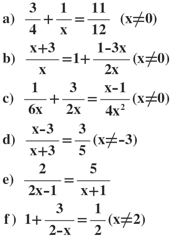

|
Exemplo 2) 7 x 8 = Para resolvermos equações fracionários com multiplicação a coisa já muda um pouco, não é necessário que façamos o mmc, basta apenas multiplicar tanto o numerador como o denominador, ficando dessa maneira: 56 |
|
Exemplo 3) 2 ÷ 1 = Assimm como a multiplicação, a divisão na expressão fracionária é um pouco diferente da adição e subtração, mas no entanto é mais parecida com a multiplicação em sua maioria. Primeiramente devemos manter a primeira fração sendo ela 2/1 (pois quando não há denominador "aparente" ele é o número 1). Logo em seguida trocamos o sial de ÷ por x, e invertemos a segunda fração que era 1/4 e passa a se tornar 4/1, dessa maneira: 2 x 4 = Agora basta resolver como a equação fracionária de multiplicação, resultando em: 8 |
• Lista de Exercícios
